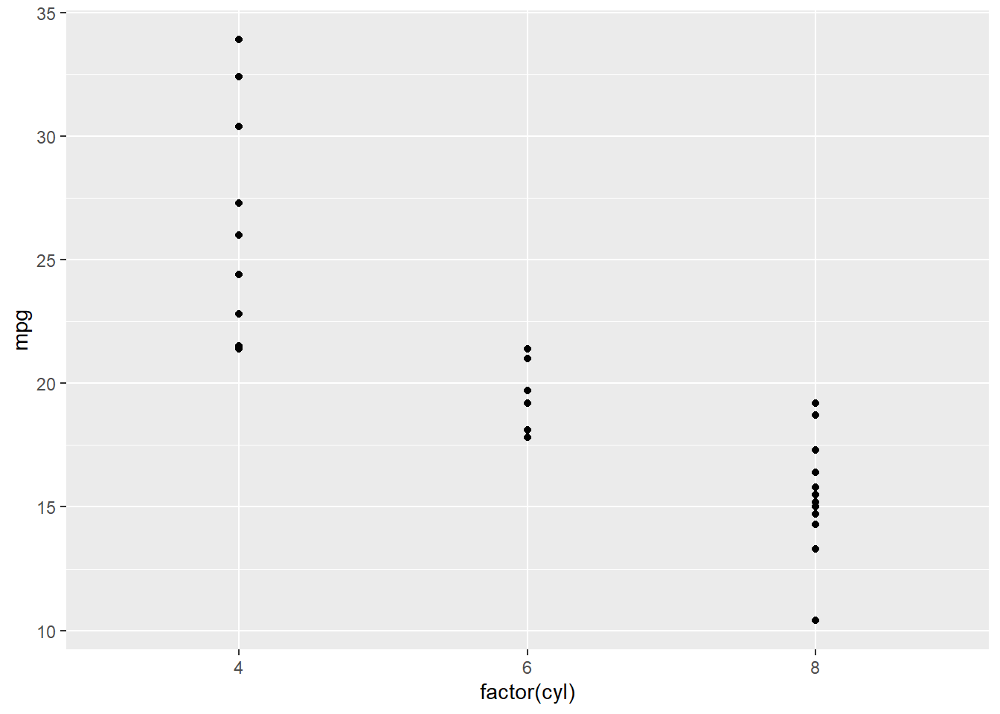

Show the code
library(dplyr)
Attaching package: 'dplyr'The following objects are masked from 'package:stats':
filter, lagThe following objects are masked from 'package:base':
intersect, setdiff, setequal, unionShow the code
library(ggplot2)
iris1 <- iris %>% filter(Sepal.Length <= 5.4)
head(iris1, 4L) Sepal.Length Sepal.Width Petal.Length Petal.Width Species
1 5.1 3.5 1.4 0.2 setosa
2 4.9 3.0 1.4 0.2 setosa
3 4.7 3.2 1.3 0.2 setosa
4 4.6 3.1 1.5 0.2 setosaShow the code
ggplot(mtcars, aes(factor(cyl), mpg)) + geom_point()